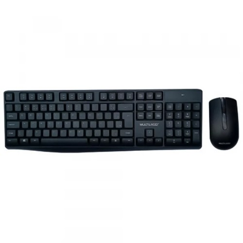
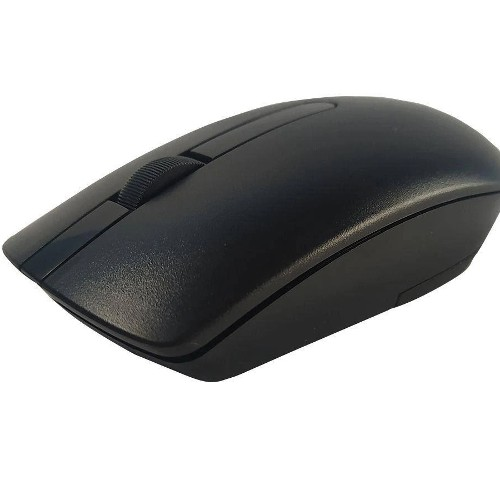

1.jpg)

Kit Teclado E Mouse Sem Fio USB TC270
R$ 144,00
COMPRAR
Descrição:Características:
- Marca: Multilaser
- Modelo: TC270
Especificações:
Conexão:
- USB
- Sem Fio 2,4 Ghz
Frequencia Sem Fio:
- 2402mhz ~ 2479mhz
Alcance:
- Até 10m
Teclado:
- Key-Caps De Baixo Perfil
- Design Compacto Letras Impressas Em Seda Com Protecao Uv Extrs Mais Duraveis
- Cupula De Borracha Colada Para Alcancar Qualidade Mais Estavel
- Indicadores De Energia Mais Baixos Para O Teclado Sem Fio
- Suporte Inclinado, Ajustavel
- Modo De Economia De Energia Automatico
Mouse:
- DPI: 1600 DPI
- Ambidestro
- Corrente De Trabalho Nominal Do Mouse: 13 Ma
- Tensao De Funcionamento Nominal Do Mouse: 1,5V
- Mudanca De Vida: 2000000
Compatibilidade:
- Windows 2000, Me, Xp, Vista, Windows 7/8/10 Ou Ibm Pc
Certificado Anatel
- Sim
Conteúdo da Embalagem:
- 1 Mouse Sem Fio
- 1 Teclado Sem Fio
- 1 Microreceptor Usb
- 2 Pilhas Aaa
Garantia:
3 anos de garantia
Peso:
607 gramas (bruto com embalagem)